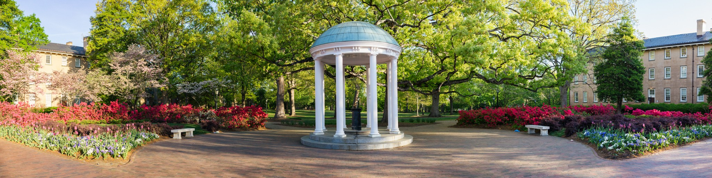
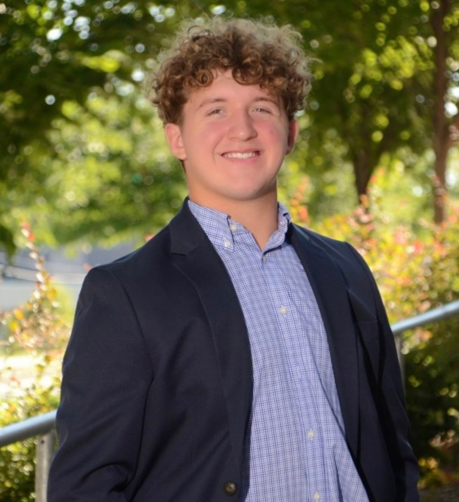

Luke Hughes
University of
North Carolina
at Chapel Hill
Class of 2029
Student · Researcher · Aspiring Clinician
I am a freshman at the University of North Carolina at Chapel Hill pursuing a Bachelor of Science in Biology with a minor in Sports Medicine. My interest in the biomedical field emerged from an accident during my childhood in Asheboro, North Carolina. My first exposure to the medical field began when I fractured my collarbone as a young child while playing stealthy ninjas with my cousins. During recovery, I became intrinsically fascinated by how the body heals itself and by the role clinicians have in facilitating the process. Thus, my interest expanded into understanding the science behind human movement and recovering from injury.
I was able to experience this interest firsthand during my senior year of high school when I tore my anterior cruciate ligament playing football. My orthopedic surgeon performed a bone-patellar tendon-bone ACL reconstruction. Through that experience, I was introduced to the complexities of orthopedic surgery and the lengthy rehabilitation process that followed. My surgical experience and the months of physical therapy that followed enlightened me to my aspirations to become an orthopedic surgeon who specializes in athletes and facilitates their return to play.
At UNC, I continued to pursue my medical interests through CATCH, a student organization that solders and rewires toy circuits to large buttons, allowing children with motor disabilities who would otherwise be unable to play to have access. Through my work in the club, I developed a new perspective regarding what it truly means to treat an individual. I started viewing the ultimate goal of clinical care as not only being to repair injuries and mitigate damage, but to also enable patients to fully engage and participate in life. Whether enabling a disabled child to play with a toy or help return an athlete to play, treatment extends past treating symptoms and involves restoring or enhancing function.
My coursework in cell biology and general chemistry has provided me with a foundation of knowledge that facilitates my understanding of the physiological mechanisms involved in injury and recovery that interest me. These courses have allowed me to develop a research interest that integrates my personal experiences of injury and recovery with my academics. I have developed a research interest that lies in understanding how to optimize outcomes for athletes returning to play following an anterior cruciate ligament reconstruction. Specifically, I aim to investigate whether successfully achieving quadriceps strength sufficiency (≥3.0 N·m·kg⁻¹) is associated with return to normalized gait biomechanics 12 months post reconstruction. These findings could support development of rehabilitation criteria that prioritize both restoration of quadriceps strength and movement quality, thereby reducing risk of reinjury and improving long-term joint health in athletes returning to sports post ACL injury.
My goal is to become an orthopedic surgeon who not only treats injuries but also utilizes innovative surgical techniques and develops advanced quality of holistic care to ensure that athletes return to play promptly and safely. I am grateful and look forward to utilizing the abundant academic resources and research opportunities provided through UNC Chapel Hill, and I am committed to contributing to the field of orthopedics and sports medicine through the knowledge and experience that I gain here.
Words That Guide My Work
Dr. Carol Greider
2009 Nobel Laureate
"It's fundamental knowledge that fuels practical implications."
— Dr. Carol Greider
Source: Greider, C. W. (2016, February 19). Fundamental science fuels practical applications. AAAS News. https://www.aaas.org/news/carol-greider-fundamental-science-fuels-practical-applications
"We propose that the novel telomere terminal transferase is involved in the addition of telomeric repeats necessary for the replication of chromosome ends in eukaryotes."
— Dr. Carol Greider
Source: Greider, C. W., & Blackburn, E. H. (1985). Identification of a specific telomere terminal transferase activity in Tetrahymena extracts. Cell, 43(2), 405-413.